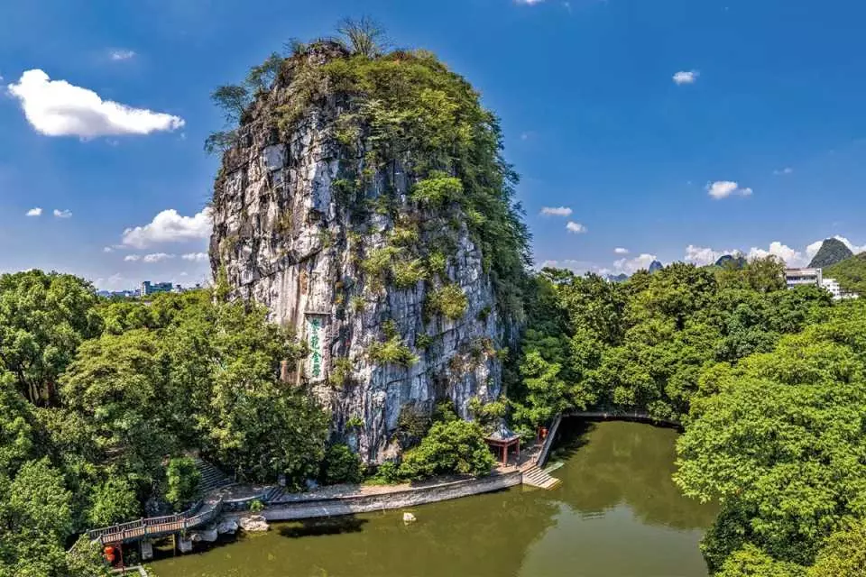
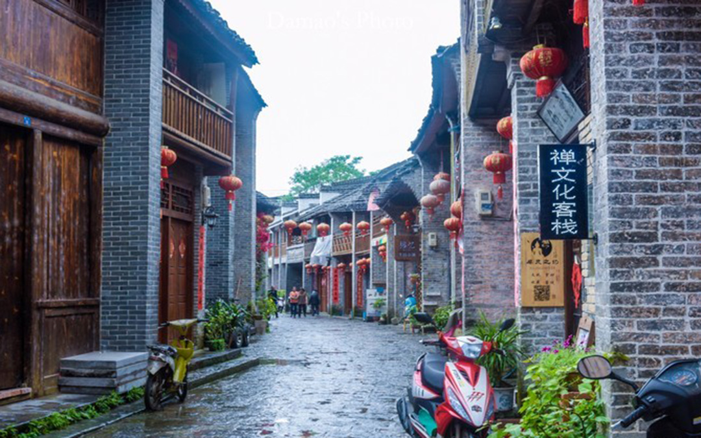
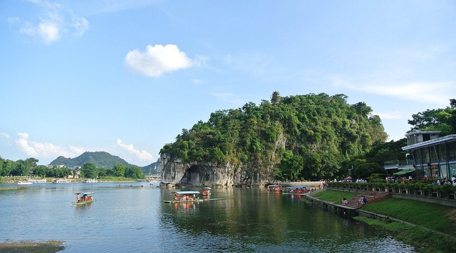

Duxiu Peak (“Solitary Beauty Peak”), in Guilin’s city center, is a 216-meter-tall karst peak that’s been a symbol of Guilin for over 1,000 years. It’s famous for its stone carvings—over 200 inscriptions from Tang, Song, Ming, and Qing dynasties, including poems by famous scholars (e.g., Su Shi, a Song Dynasty poet). At the foot of the peak lie the ruins of Wangcheng Palace, a Ming Dynasty imperial palace (built in 1372) that was once the residence of Zhu Yuanzhang’s son (the Prince of Jingjiang). Today, you can walk through the palace’s old gates, see the remains of its walls, and climb Duxiu Peak’s 396 steps to the top—where you’ll get a 360° view of Guilin’s downtown and surrounding karst peaks.
Morning (8:30 AM–10:00 AM): Cool for climbing; good light for reading stone carvings.
Spring (March–April): Osmanthus flowers bloom at the peak’s base.
Entry Fee (Duxiu Peak + Wangcheng Palace): 70 CNY/adult; 35 CNY/students; free for kids under 1.2m.
Guided Tour (1 hour): 50 CNY/group (includes explanation of stone carvings and palace history).

Xingping Ancient Town, 26 kilometers from Yangshuo, is a 1,700-year-old town that’s retained its old-world charm—narrow cobblestone streets, brick houses with wooden balconies, and old shops selling local handicrafts (e.g., bamboo baskets, osmanthus tea). It’s famous for being the backdrop of the 20-yuan Chinese banknote (the image shows Xingping’s karst peaks and Li River). Walk along “Old Street” (Xingping’s main street) to see the “Xingping Ancient Gate” (built in the Ming Dynasty) and the “Chen Family Ancestral Hall” (a Qing Dynasty hall with wooden carvings). At the town’s riverfront, you can watch local fishermen feed their cormorants (a traditional fishing method) or take a short bamboo raft trip on the Li River.
Afternoon (3:00 PM–5:00 PM): Soft sunlight on old buildings; fewer crowds than Yangshuo.
Winter (December–January): Quiet, with misty views of the Li River.
Entry Fee: Free (the town is open to the public).
Chen Family Ancestral Hall Entry Fee: 20 CNY/adult; 10 CNY/students.
Cormorant Fishing Show: 50 CNY/person (evening shows, includes photos with fishermen).

Xiangbi Mountain (“Elephant Trunk Hill”), on the west bank of the Li River, is Guilin’s most recognizable landmark—a karst peak shaped like an elephant bending its trunk to drink from the river. It’s been a Guilin icon since the Tang Dynasty (618–907 AD), with poems and paintings of it dating back over 1,000 years. At the base of the hill, you’ll find “Water Moon Cave”—a natural archway that looks like a moon floating on the Li River when the water is calm. Climb the 183 steps to the top of the hill for views of the Li River and Guilin’s downtown. There’s also a small museum at the hill’s base with exhibits about Guilin’s karst geology and the hill’s history.
Sunset (5:30 PM–6:30 PM): The hill’s shadow stretches over the Li River; Water Moon Cave looks magical.
Spring (April–May): The Li River’s water is high, making the “elephant trunk” look like it’s truly drinking.
Entry Fee: 55 CNY/adult; 27 CNY/students; free for kids under 1.2m.
Museum Entry Fee: Included in the hill’s entry fee.